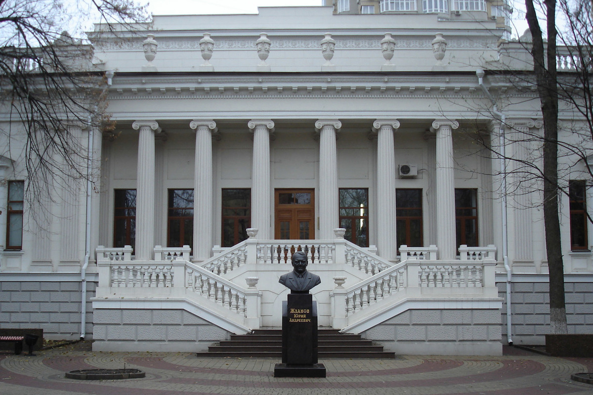

|
Заслуженные награды в День работника культуры 25 марта, в День работника культуры, в Областном доме народного творчества прошло торжественное мероприятие, собравшее сотрудников музеев, библиотек, театров, художественных руководителей коллективов Ростовской области. В мероприятии принял участие губернатор Ростовской области Василий Юрьевич Голубев, заместитель полномочного представителя Президента в ЮФО Владимир Николаевич Гурба. Наградами были отмечены сотрудники Донской государственной публичной библиотеки: БЛАГОДАРНОСТЬЮ МИНИСТРА КУЛЬТУРЫ РОССИЙСКОЙ ФЕДЕРАЦИИ награждена Шелюх Елена Станиславовна, зав. научно-методическим отделом. |
|
Серию «Особенные дети» представят в Донской публичной библиотеке авторы издательства «Феникс» 30 марта в 13:00 в выставочном зале библиотеки состоится встреча с автором книги «Сказка про кита и звезды. Книга-медитация для особенных людей» Натальей Вертлиб и редактором книги «Понимание аутизма. Руководство для родителей» Ириной Баткаевой.
Наталья Вертлиб писатель, телесный практик, энерготерапевт, наставник, директор Благотворительной ассоциации поддержки родителей детей с ограниченными возможностями «Второе дыхание»; Ирина Баткаева — редактор направления прикладной и учебной литературы издательства «Феникс», радиоведущая, филолог, журналист, увлечена созданием интересных и полезных книг для читателей. |
|
Арт-маршрут апреля: VII Фестиваль современного искусства 2 апреля в 14.00 в зимнем саду библиотеки состоится торжественное открытие седьмого ежегодного фестиваля современного искусства «DSPL ART-2022», который пройдет в Донской государственной публичной библиотеке со 2 по 26 апреля.
DSPL ART станет масштабным событием. Вниманию зрителей будет представлено более чем 100 живописных и графических работ, 20 скульптурных арт-объектов от более чем 50 художников из Ростова-на-Дону и Азова, Новочеркасска и Кропоткина (Краснодарский край), а также из станицы Елизаветинской. DSPL ART позволит познакомиться с новыми течениями в живописи и скульптуре, Media Art и VR искусстве, современного театра, музыкального искусства. |
|
Арт-маршрут апреля: VII Фестиваль современного искусства 24 марта студенты 1 курса строительного колледжа приняли участие во «Встречах в Публичке», в ходе которых они смогли познакомиться с историей создания и основными видами словарей русского языка.
Особый интерес у публики вызвала авторская презентация Любови Феоктистовны Волошиновой двух сборников: «Ростовские байки и легендарные истории. Книга первая и Книга вторая». |